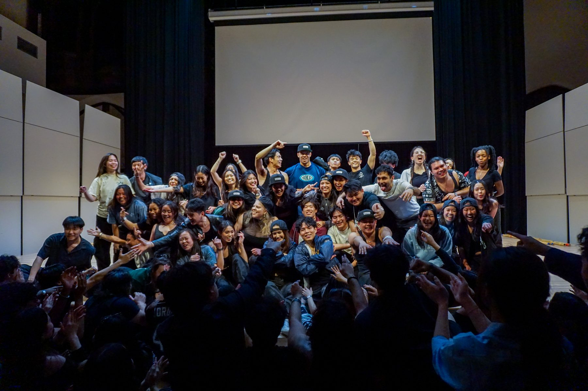
Event Strategy · Leadership · Audience Growth · 2024–25
A year planning and leading Northeastern Barkada's flagship events as Vice President, from a professional conference to a ticketed performance show that sold out in minutes.
Role
Vice President · 2024–25
Timeline
2024 – 2025
Focus
Event strategy, program planning, speaker & panelist outreach, ticketing, team leadership
Team
Led a 12-person executive board
The work
As Media Specialist, I designed the visuals for every Barkada event. As Vice President the following year, I moved to the other side of that work, planning and leading the events themselves alongside a 12-person executive board I managed directly.
Three events defined that year: a professional conference built from the ground up with university involvement, a ticketed performance show whose demand outpaced anything Barkada had seen before, and a campus-wide welcome week fair run in partnership with 40+ student organizations. Planning them meant learning outreach, logistics, and audience-building skills I hadn't needed as a designer.
I also mentored the eboards that came after me on event planning, and wrote a post-event summary after each show breaking down what worked and what to improve for the following year.
Professional conference
The Filipino Community Conference is Barkada's conference-style event: a keynote speaker, a panel of Filipino professionals, and a full slate of workshops, built to create space for discussion about Filipino identity and connect people across the Greater Boston area.
As VP, I led the planning behind that year's conference, coordinating outreach for 14 speakers across the keynote, panel, and workshops, and working with university leadership to secure the backing and space a conference of that scale needed. Over 150 students and community members filled the room. One of the panelists is a social media content creator with over 1.8 million followers on TikTok, which brought a different kind of visibility to the event beyond campus.
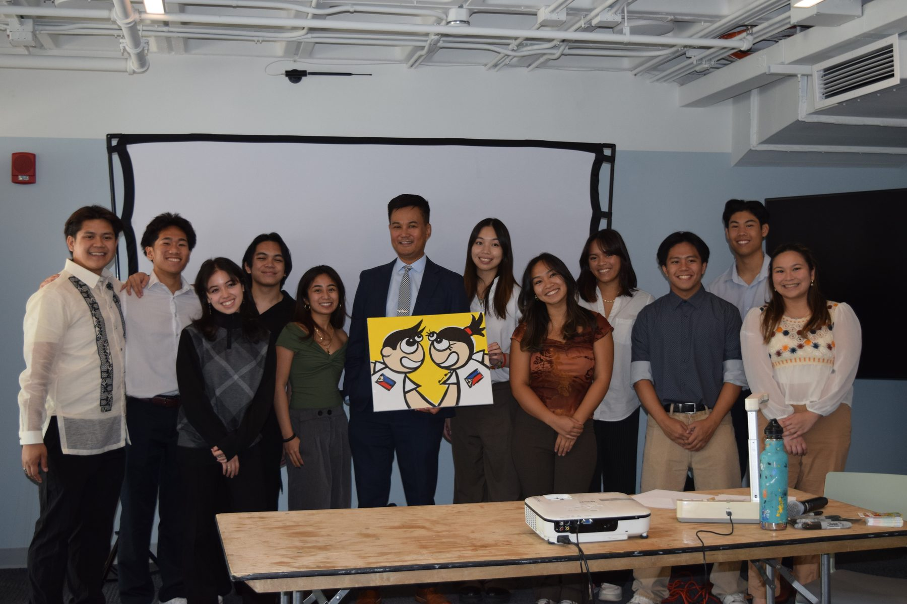
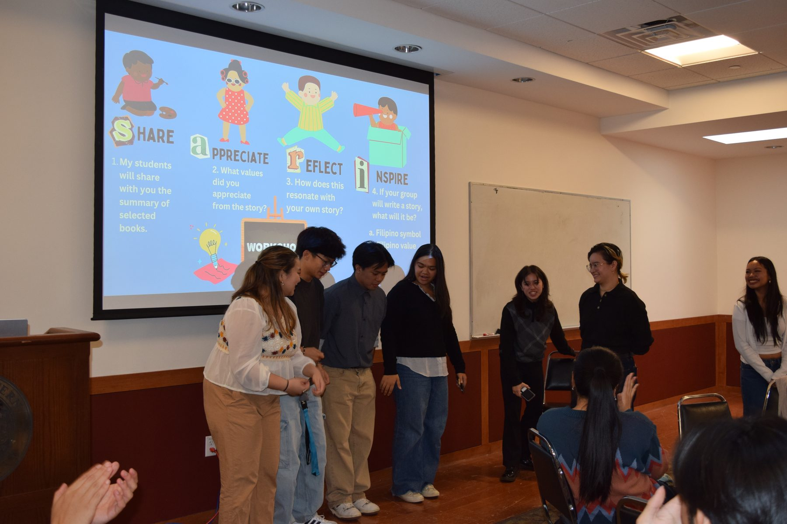
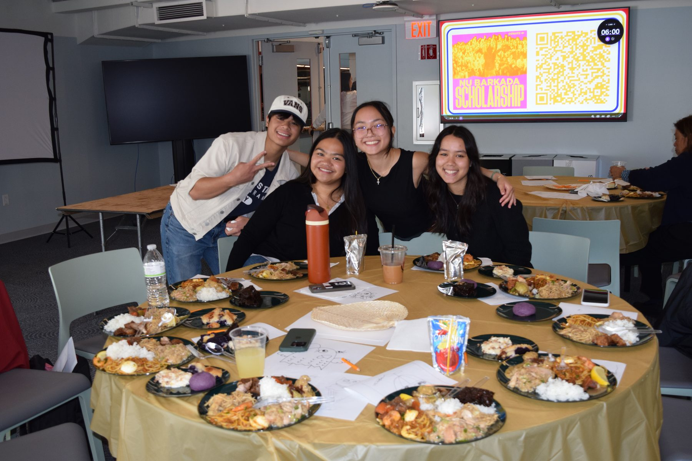
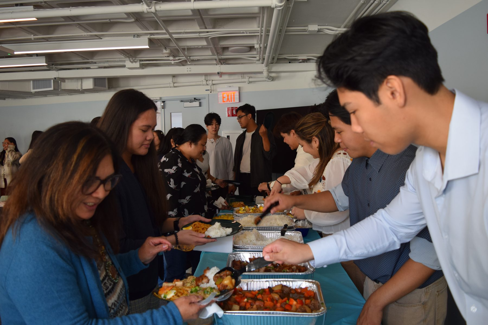
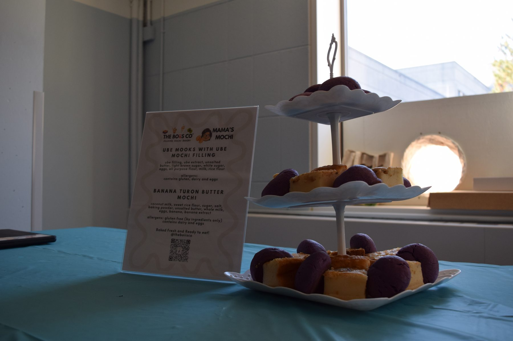
150+
Attendees
14
Speakers across the keynote, panel & workshops
6
Workshops programmed
Ticketed performance show
Bahay Kubo is Barkada's biggest performance show of the year, a full night of modern and traditional Filipino dance, singing, and skits, and the final show for graduating seniors. As VP, I helped lead the planning behind that year's show: coordinating performers, venue logistics, and the ticket release itself.
Demand for tickets that year outpaced anything before it: the full 250+ ticket release sold out in five minutes, built on the audience trust and anticipation from years of consistent, well-executed events.
Beyond the show itself, I helped set up a livestream that pulled in 1000+ views online, so family and community members who couldn't make it in person could still watch, and brought in professional photographers and videographers to document the night. I spent months scheduling rehearsals, choreographing and teaching my own dance every week, all while planning Barkada's other events and working with the team to keep every part of the club running smoothly.
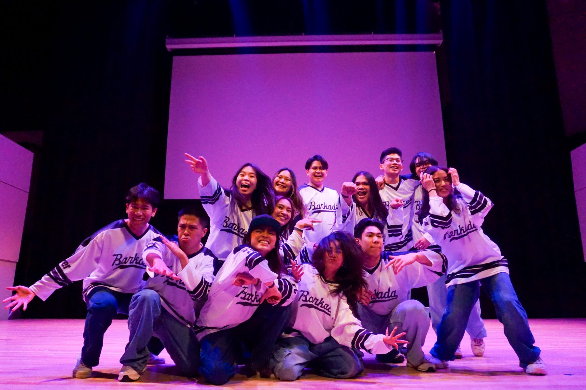
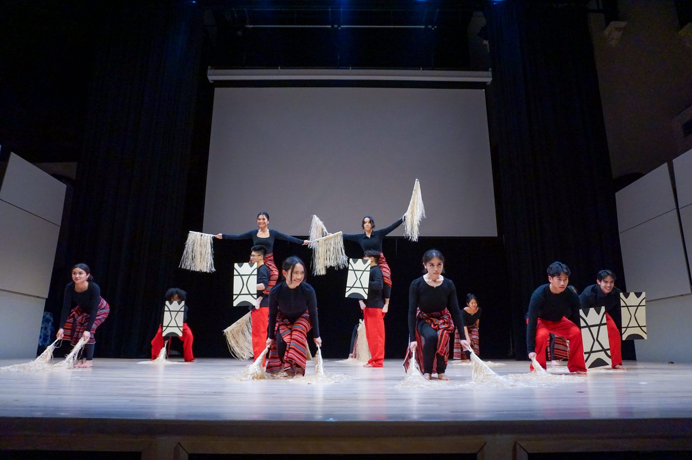
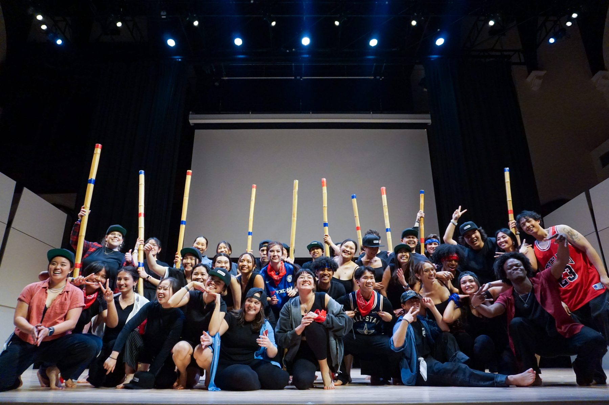
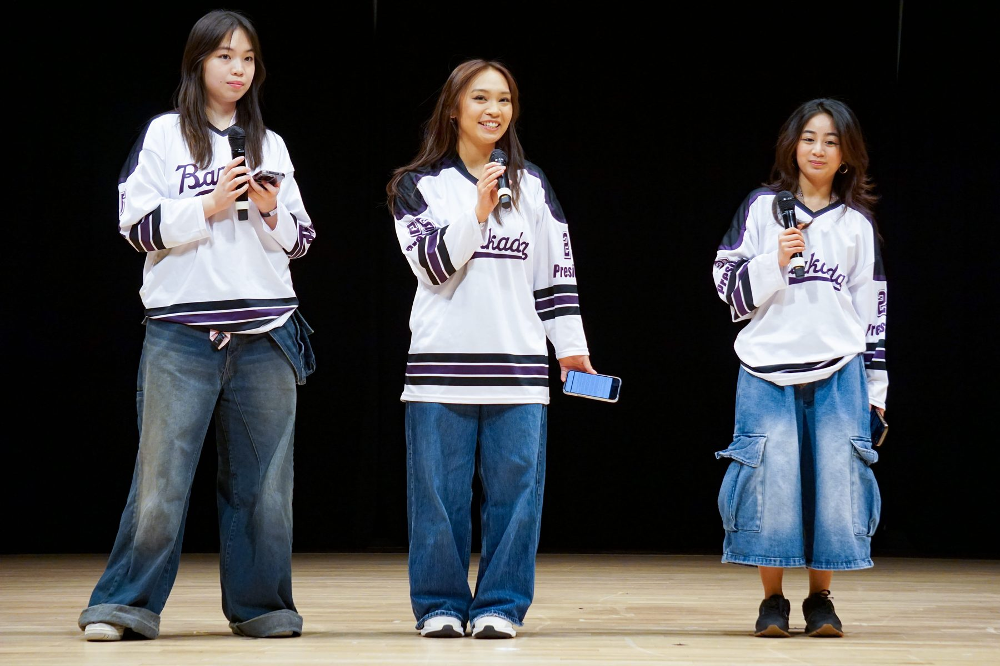
250+
Tickets sold
5 min
Time to sell out
1000+
Views on the YouTube livestream
Welcome week fair
Husky Global Fair takes place during welcome week and is marketed as one of the first, most important events new students should go to, the place where they find the cultural organizations on campus that end up becoming their community. Barkada leads the planning of the fair every year.
As VP, I planned HGF end to end. Working with our PR team, I reached out to every cultural org on campus about tabling and performing. Interest came back from 40+ organizations, and performance sign-ups came in high enough that we had to cap the lineup at 12 slots and run a lottery to choose who performed. Beyond tabling and performances, I brought in a food truck and organized four additional activities to round out the day. The fair drew 1000+ attendees over the course of the day.
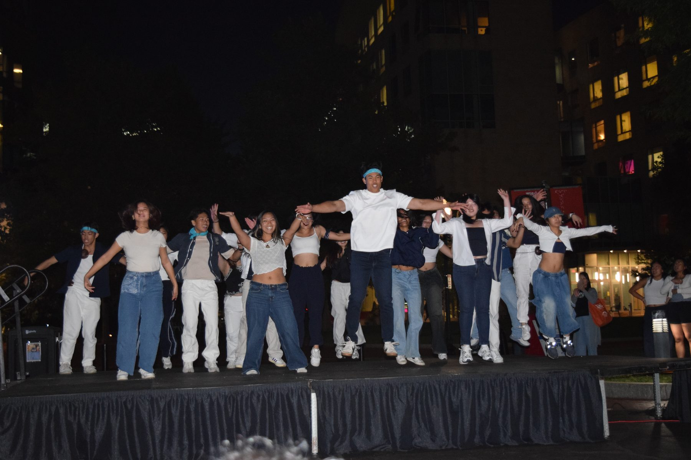
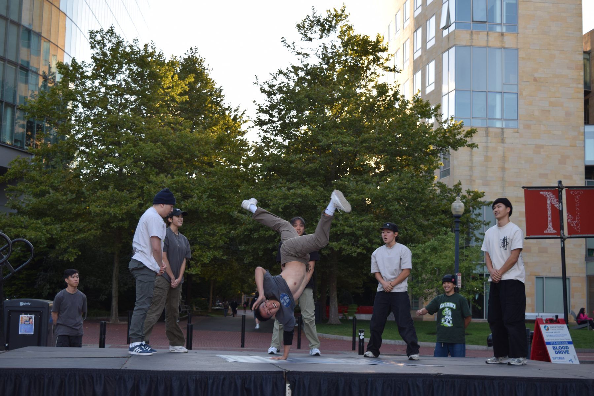
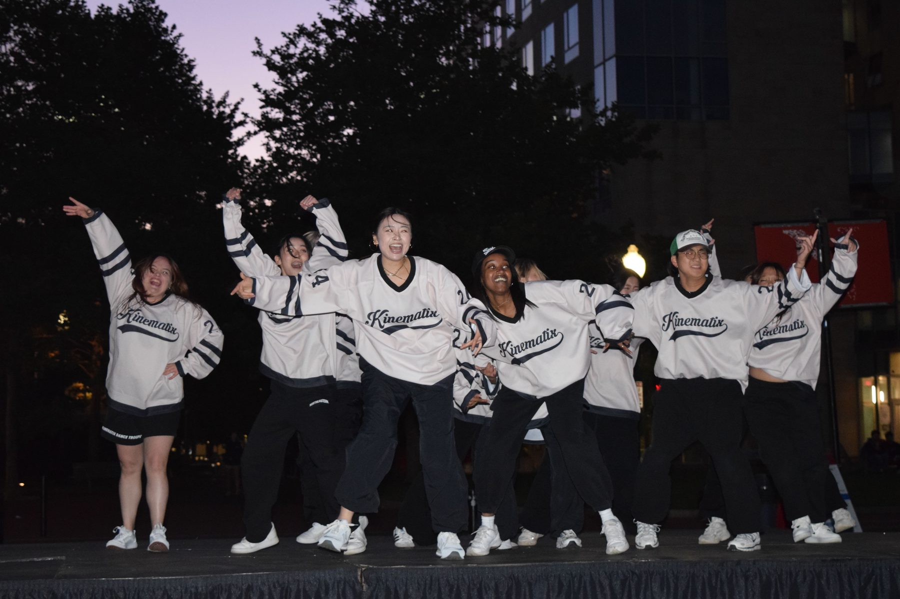
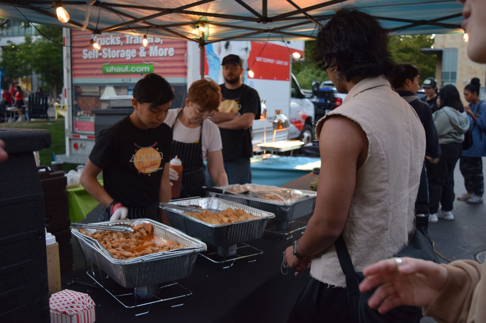
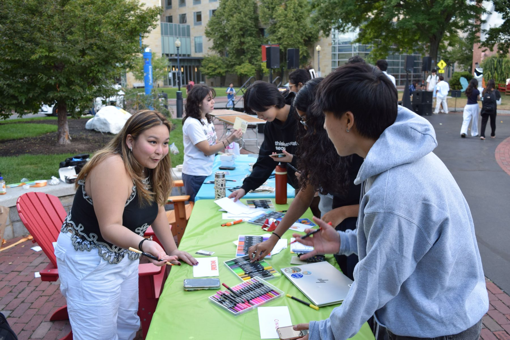
40+
Organizations tabling or performing
12
Performance slots, chosen by lottery
1000+
Attendees over the day